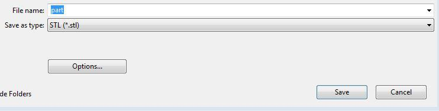

Saving the Sketch
Now that we have created the geometry that we want the printer to model we need to save the file in a filetype which the cubepro can interpret and build. Select file Save As and save as a .stl file. We will then import this file into the cubepro software so that it can be oriented properly for the machine to print.
Click here for the next step.